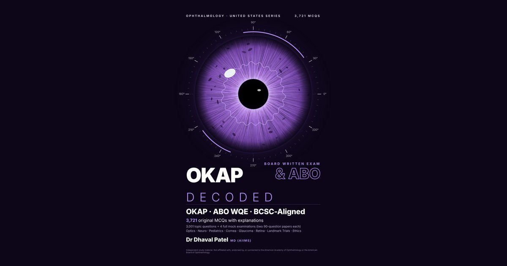
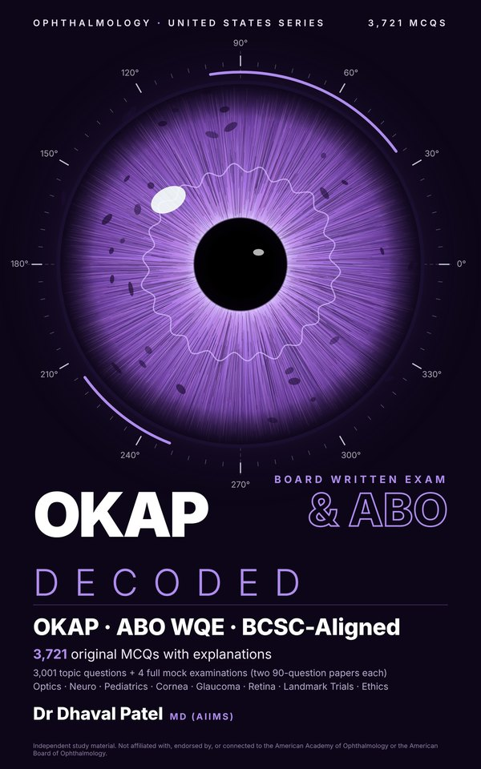

For: PG residents
Last updated: November 2026
OKAP & ABO Decoded is a question bank for US ophthalmology residents sitting the Ophthalmic Knowledge Assessment Program (OKAP) examination and for graduates sitting the American Board of Ophthalmology Written Qualifying Examination. Written by Dr Dhaval Patel, MD (AIIMS), it holds 3,721 original MCQs: 3,001 topic questions in 14 chapters that follow the sections of the Basic and Clinical Science Course, and 4 full mock examinations of two 90-question papers.

3,721 original MCQs: 3,001 topic questions in 14 chapters + 4 full mock examinations (two papers of 90 questions each).
Kindle edition, available on Amazon worldwide.
From OKAP & ABO Decoded · Clinical Optics & Refraction
Specular microscopy relies on:
Answer: C. Specular microscopy captures light reflected at the endothelium– aqueous interface, imaging cell mosaic. Parameters: cell density (normal about 2,500–3,000 cells/mm² in adults), coefficient of variation (polymegathism) and percentage of hexagonal cells (pleomorphism). Edema or guttae reduce image quality.
Why not: A — Not this. B — Not this. D — Not main.
Pearl: Corneal edema reduces image quality.
From OKAP & ABO Decoded · External Disease & Cornea
Epstein–Barr virus keratitis typically presents with:
Answer: A. EBV can cause follicular conjunctivitis, nummular keratitis, Parinaud oculoglandular syndrome and dacryoadenitis in infectious mononucleosis. Stromal lesions respond to topical steroids.
Why not: B — HSV. C — VZV. D — CMV.
Pearl: EBV: nummular keratitis.
One question from each of ten chapters, taken from the book. Tap an answer to see the explanation.
For a timed paper, take the free OKAP & ABO Decoded sample mock (50 questions from the book's first mock examination), or see all free mock tests.
Every Decoded book follows the same method: an original question, the reasoning behind the answer, why each wrong option is wrong, and a pearl. See the whole series.
| Book | Examination | Region |
|---|---|---|
| OKAT Decoded (3 volumes, 10,200 MCQs) | AIOS-OKAT | India |
| FRCOphth Part 1 Decoded (3,484 SBAs) | FRCOphth Part 1 | United Kingdom |
| FRCOphth Part 2 Written Decoded (4,725 SBAs) | FRCOphth Part 2 Written | United Kingdom |
| FICO Decoded (3,336 MCQs) | ICO examinations and FICO | International |
| OKAP & ABO Decoded (3,721 MCQs) | OKAP and ABO Written Qualifying Examination | United States |
| FEBO Decoded (3,721 MCQs) | EBO Diploma (FEBO) | Europe |
Where can I buy it? It is a Kindle book on Amazon in every country. Use the buttons above, or search "OKAP & ABO Decoded" on your own Amazon store. You can read it on a Kindle or in the free Kindle app on a phone, tablet or computer.
Are the questions from past papers? No. Every question is original, written to test the same knowledge in the same single-best-answer style.
How do I report an error? Email drdpatel87@gmail.com. Corrections are welcome for future editions.
See also: OKAP, FRCOphth and ICO exam formats, ophthalmology exams abroad, about the author and all books by Dr Dhaval Patel.
Independent study material. Not affiliated with, endorsed by, or connected to the American Academy of Ophthalmology or the American Board of Ophthalmology. "OKAP", "ABO" and "BCSC" are used only to identify the examinations and curriculum this book prepares for. All questions are original. Candidates should confirm the current examination format with the examining body.
📘 Want more exam-ready material? See Most Commons in Ophthalmology on Kindle, or browse all my books.
How to cite this page
Patel D. OKAP and ABO Decoded: OKAP and Board Written Exam Question Bank with 3,721 MCQs. RPC Rounds (Sadbhaav Eye Clinic). Updated November 2026. Available at: https://www.sadbhaavclinic.com/okap-abo-decoded.html. Accessed [date].
Looking for an eye specialist in Ahmedabad? Learn about our Eye Department or book a consultation with Dr. Dhaval Patel.